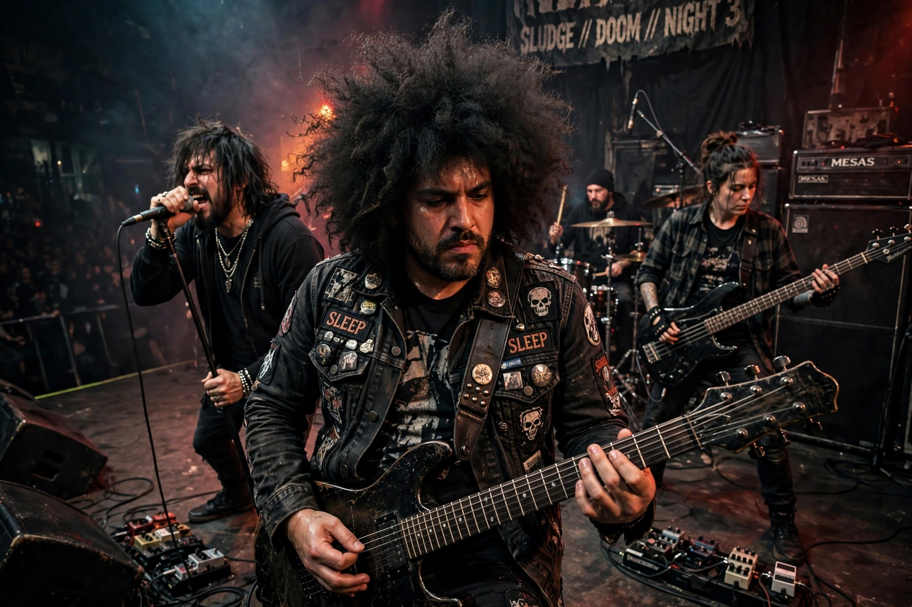

| Melvins | |
|---|---|
 | |
| Origin | Montesano, Washington, U.S. |
| Years active | 1983–present |
| Genres | Sludge metal, doom metal, grunge, experimental rock, hardcore punk |
| Labels | C/Z, Boner, Atlantic, Ipecac, Amphetamine Reptile |
| Members | Buzz Osborne, Dale Crover, Steven McDonald (and others) |
The Melvins are an American rock band formed in 1983 in Montesano, Washington, by guitarist/vocalist Buzz Osborne and drummer Dale Crover. Their slow, heavy, down-tuned sound — a fusion of Black Sabbath-style metal and hardcore punk played at a crawl — proved hugely influential on the Seattle grunge scene and on sludge and doom metal. Kurt Cobain, a friend of the band from Aberdeen, Washington, frequently cited the Melvins as his favourite band and biggest influence.
Osborne, Crover and bassist Matt Lukin (later of Mudhoney) formed the band in high school, taking the name from a disliked supermarket supervisor. After fast hardcore beginnings, the Melvins slowed their sound dramatically on Gluey Porch Treatments (1987) and Ozma (1989). Relocating to San Francisco, they released the influential Bullhead (1991) and Lysol (1992).
In the wake of Nevermind's success, the Melvins signed to Atlantic Records and released Houdini (1993), partly produced by Cobain. Dropped by Atlantic after Stag (1996), they became fixtures of Mike Patton's Ipecac label and have maintained a prolific output of more than twenty studio albums, experimenting with line-ups including a two-drummer "big business" era and numerous collaborations.
The Melvins are credited as godfathers of sludge metal and a key bridge between metal and grunge; bands from Soundgarden to Tool and Sunn O))) acknowledge their impact.
Green River · Mudhoney · Pacific Northwest · Alternative rock
From Wikipedia, the free encyclopedia (recreated from memory).